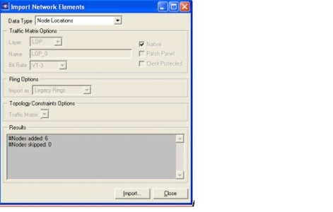
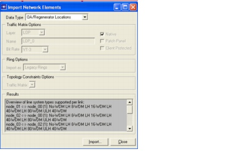
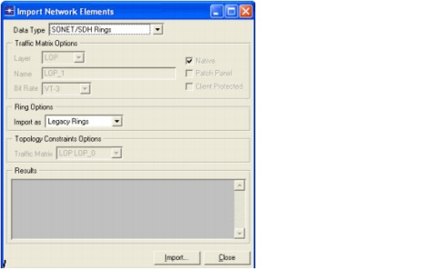
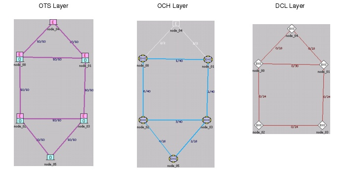

Introduction > Importing Network Elements
Importing Network Elements
This section describes how to create a network by importing network elements. Example network element files are in the following directory:
You can view the example element files in a spreadsheet program to examine the file format.
See the File > Export > Network Elements dialog box for the corresponding export functions, creating .csv files listing the network elements.
Procedure 1-3 Importing Network Elements
- Create a new project.
- Select File > New.... When the New dialog box appears, choose OK.
- Enter Example3 as the project name (do not change the scenario name), and then press OK.
The Create a New Network dialog box appears.
- Choose SONET as the TDM nomenclature of the bit rates. SONET and SDH are the US and European standards used in today's transport networks. Select km as distance unit and Logical in the View category. In logical view, no background map is displayed.
- Click OK.
- Import the network topology.
- Select File > Import > Network Elements... to open the dialog box that enables you to import network elements from a .csv file.
- Select Node Locations as Data Type. Click Import, move to the directory specified at the beginning of this section, and select the file WDMGuru_import_node_locations.csv.
- Press Open (Windows) or OK (UNIX). This imports six nodes and displays them in the workspace.

- Select OTS links as the Data Type.
- Click Import, select the file WDMGuru_import_OTS_links.csv in the file browser, then click Open (Windows) or OK (UNIX).
Eight OTS links have been added to the network.
- Select OA/Regenerator Locations as the Data Type. Browse for the input file WDMGuru_import_OA_regen_locations.csv, then press Open (Windows) or OK (UNIX).
Seven optical amplifier and regenerator sites have been added to the network.

- Import the equipped fibers and the traffic matrices.
- Select Equipped Fibers as the Data Type, click Import, and select the file WDMGuru_import_equipped_fibers.csv.
Eight fibers have been equipped in the network.
- Select Traffic Matrix as the Data Type. Select OCH as the Layer. Set the traffic matrix name as OCH_1. Select OC-48 as the bit rate. Put a checkmark next to Native and uncheck Patch Panel.
- Click Import and select the file WDMGuru_import_OCH_trafficmatrix.csv.
A new OCH traffic matrix (OCH_1) has been created with 26 OC-48 wavelength demands.
- Select Traffic Matrix as the Data Type and LOP as the Layer. The LOP layer is the Lower Order Path layer of SONET.
- Fill in LOP_0 as the Name and choose VT-6 (6 Mb/s) as the Bit Rate.
- Click Import and select the file WDMGuru_import_LOP_trafficmatrix.csv. A new LOP traffic matrix has been created with 882 VT-6 demands.
- Select Connection List as the Data Type and OCH as the Layer.
Importing connection lists is similar to importing traffic matrices, but the first allows you to optionally specify the routes along with which connections are accommodated in the network.
- Name the traffic matrix OCH_2 and select OC-192 as the bit rate. Put a checkmark next to Native and uncheck Patch Panel and Client Protected.
- Click Import and select the file WDMGuru_import_OCH_connectionlist.csv.
A new OCH traffic matrix, OCH_2, has been created with eight connections. All these connections are routed in the network.
- Import SONET/SDH rings.
- Select SONET/SDH Rings as the Data Type to configure SONET/SDH rings in the DCL layer of your network.

- Click Import and select the file WDMGuru_import_SONET_rings.csv.
Four rings have been added to the network.
- Close the Import Network Elements dialog box.
- This sequence of file imports produces a six-node network that contains the following:
- Four EOCC nodes, one ECC and one OCC node (OTS layer)
- Seven OA locations (OTS layer)
- Eight lit fiber pairs (OMS layer)
- Two OCH traffic matrices (OCH layer): OCH_1, unrouted, containing 26 connection units and OCH_2, 100% routed, containing 12 connection units
- Four SONET rings (DCL layer)
- One LOP traffic matrix (LOP layer): LOP_0, unrouted, containing 882 connection units

- Save and close the project.
End of Procedure 1-3
| Home © 1987-2007 OPNET Technologies, Inc. All Rights Reserved. This software may be covered by one or more U.S. Patents. See complete patent notice in the Legal Notices section. OPNET Support Center |